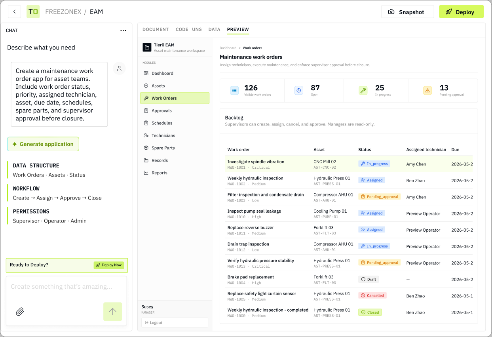

Two products, Two ways to build industrial operations.
Surface · company-website
公司官网.
长文产品叙事对齐 Pricing 与 Builder：IBM Plex Sans 标题、亮绿 CTA、■ Mono 标签、细边框。禁止 Poppins。
01 / Preview
在真实场景中查看
白底编辑 Hero：括号挑词、绿字信号、主 CTA 用 `#B2ED1D`。
HOW IT WORKS
From [Business Requirement] to [Published Apps].
Describe your workflow and generate a working application—with managed data, permissions, and web + mobile access.
Start Building Free ↗
Explore templates
New accounts receive free credits — equivalent to Builder usage on day one.

02 / Components
组件样式
对齐 surfaces/company-website/、tokens/website.css 与线上官网。
Free Trial ↗
Talk to Team
Tier0 Builder
Generate and manage industrial apps with AI
Tier0 Platform
UNS · edge · analytics · multi-site
■ LAST-MILE APP CREATION
用 Mono ■ 标签切章节；大标题一句结论；证据区用细边框面板。
03 / How to use